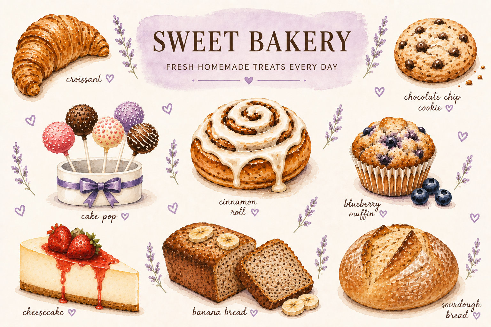

Fresh Homemade Treats Every Day

Welcome to Sweet Caro's Bakery! We proudly bake fresh breads, pastries, cookies, cakes, and sweet treats using fresh, high-quality ingredients, including organic ingredients whenever possible. Every item is homemade with love and baked fresh daily.
Fresh sourdough bread and banana bread baked daily using fresh, quality ingredients.
Cheesecake, cake pops, cinnamon rolls, cookies, and blueberry muffins made fresh every day.
Every recipe is handcrafted with care using fresh, high-quality ingredients to bring homemade goodness to every customer.